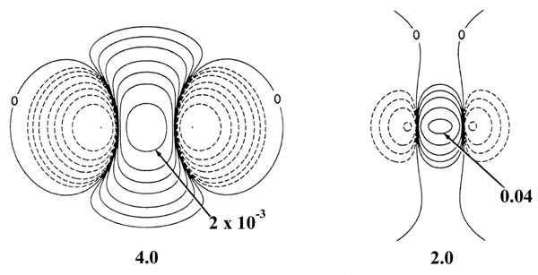

Fig. 6-10. Density difference distribution (molecular minus atomic) for the approach of two H atoms. These maps indicate the changes in the atomic densities caused by the formation of a molecule. The solid contours represent an increase in charge density over the atomic case, while the dashed contours denote a decrease in the charge density relative to the atomic densities. Since the changes in the charge density are much smaller for large values of R than for small values of R two different scales are used. The solid and dashed contours increase (+) or decrease (-) respectively from the zero contour in the order ±2 x 10-n, ±4 x 10-n, ±8 x 10-n au for decreasing values of n. The maps for R = 8.0, 6.0 and 4.0 au begin with n = 5 and those for R = 2.0, 1.4 and 1.0 au begin with n = 3. The zero contour and the value of the innermost positive contour are indicated in each case. Note the continuous increase in charge density in the region between the nuclei as R is decreased.